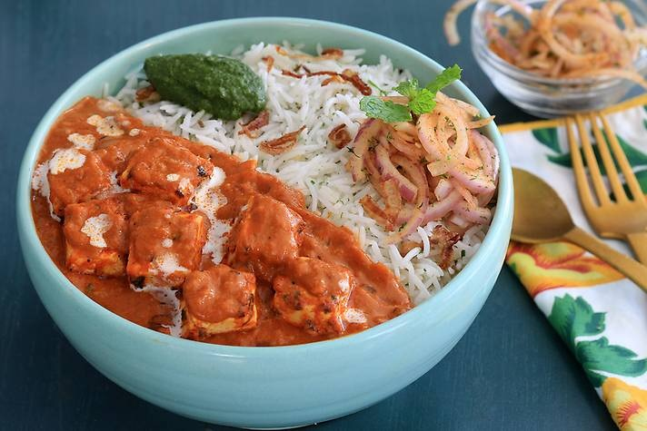
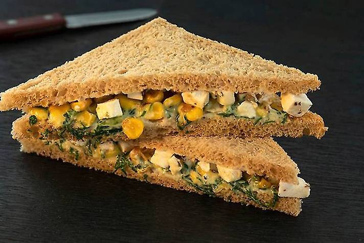
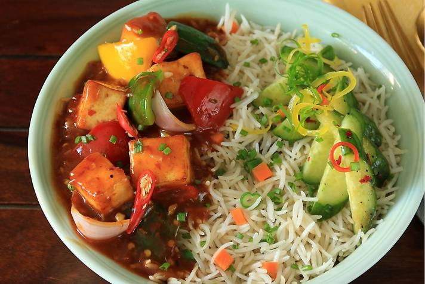

We present to you our delicious cusinies. You can order them by simply clicking on the button below them.
Indulge in the exquisite flavors of our Paneer Tikka Rice Bowl, a culinary masterpiece that tantalizes the taste buds with every bite. Succulent cubes of paneer, marinated in a symphony of aromatic spices and yogurt, are grilled to perfection, imparting a smoky charred essence. Nestled atop a bed of fluffy basmati rice, adorned with vibrant bell peppers, onions, and cherry tomatoes, each mouthful offers a delightful burst of flavors and textures. Finished with a drizzle of tangy mint yogurt sauce and a sprinkle of fresh cilantro, this dish is a harmonious fusion of traditional Indian cuisine and modern culinary innovation, sure to leave you craving more.
Savor the delightful fusion of flavors in our Paneer Popeye Sandwich, a wholesome treat that packs a punch of taste and nutrition. Tender paneer slices, infused with aromatic spices and grilled to perfection, provide a hearty base for this culinary creation. Layered with a generous helping of vibrant spinach leaves, rich in iron and essential vitamins, the sandwich offers a nutritious boost with every bite. Complemented by creamy mayonnaise, tangy tomato slices, and crisp lettuce, it's a symphony of textures and tastes. Encased within soft, toasted bread, our Paneer Popeye Sandwich is a satisfying indulgence that promises to leave you craving for more.
Experience the bold flavors of our Chilli Paneer Rice Bowl, a tantalizing blend of spice and comfort. Succulent cubes of paneer, tossed in a fiery chilli sauce, create a symphony of savory and spicy notes. Nestled atop a bed of steaming, fluffy basmati rice, this dish offers a satisfying base for the explosion of flavors to come. Garnished with colorful bell peppers, crunchy onions, and fragrant spring onions, each bite is a culinary adventure. Finished with a drizzle of tangy sauce and a sprinkle of sesame seeds, our Chilli Paneer Rice Bowl is a delicious fusion of Asian-inspired cuisine and comforting rice bowl goodness, perfect for a satisfying meal.
Indulge in the rich and royal flavors of our Paneer Makhani Thali, a regal feast fit for royalty. Succulent cubes of paneer, bathed in a luxurious creamy tomato gravy, steal the spotlight with their decadent richness. Accompanied by fragrant basmati rice, each grain infused with the essence of aromatic spices, this dish offers a symphony of flavors and textures. A medley of traditional Indian sides completes the ensemble, including buttery naan bread, refreshing cucumber raita, and crisp papadum. Garnished with a sprinkle of fresh coriander leaves and a dash of ghee, our Paneer Makhani Thali promises an unforgettable dining experience, transporting you to the palaces of India with every delectable bite.